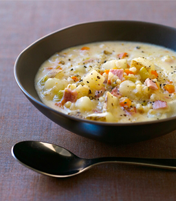

A navy bean purée base with bits of white potato and sweet potato.
df
gf
Hot and Sour
A Chinese-Canadial classic started with chicken stock infused with green
onions, sesame, ginger, and chili paste. Then tofu, marinated pork
tenderloin, dried shitake mushrooms, dried lily flower, black fungus,
and local duck eggs fill this rich full-flavoured soup with a variety of
textures. The heat is balanced by the sour and freshness of
lemongrass and rice vinegar.
df
gf
Hot Italian Sausage
With a base of chicken stock and pureed tomatoes, adding sweet bell
peppers, tomato and fennel to cure your craving for Italian flavours.
Pieces of sausage and peppers for texture as well as carrots, celery,
and onion are complemented with lots of comforting Italian herbs
and spices.
df
gf

Potato Peameal
A classic creamy style potato soup with a smooth texture harbours
notes of parmesan cheese and chunks of fresh celery. A hearty helping
of diced fried local peameal bacon gives this soup its unique character.
gf
Southwest Beef
In the style of a loose chili, this is quickly becoming a favourite
among our broth-based flavours. Started with our beef stock and tomato
juice this chunky concoction boasts ground beef, red and green peppers,
carrots, celery, onions, pinto beans, black beans, corn, and a little
jalapeño for kick. Great on its own with some crusty bread and you can
also add your own favourite chilies to kick up the heat even more.
df
vg
Southwest Chicken
The new little sister of Southwest Beef, this brothy soup starts
with our chicken stock and crushed tomato. With all the peppers,
veggies and bean you've come to love and expect, we also add long
grain righ to the chicken version. With a heat that can be amped up
for those cold days but enjoyed by the whole family, this one is
sure to be a hit.
df
vg
Thai Peanut Chicken
Our Chicken “Pad Thai Soup“ has large pieces of red pepper and
carrots, along with diced chicken. The base is a combination of
our chicken stock, rice flour and natural peanut butter with
Thai herbs: cilantro, basil, and mint along with chilies to
bring some heat.
df
vg
Spicy Chicken Samosa
This is the ultimate hearty, spicy, soup and it starts with
Soup Surreal's own chicken stock. This Soup's On award winning
creation is a breakdown of a traditional chicken samosa.